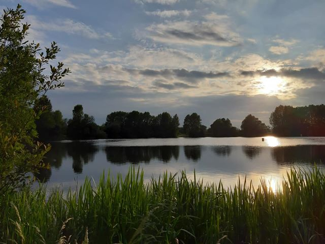

Open water
Some of our swimmers also informally arrange open water sessions away from our pool sessions at local organised open water venues. These sessions are used to compliment pool training.
It is recommended that all open water swimmers wear a tow float and brightly coloured hat for visibility and safety.
For any beginners who would like to have a coaching session before getting into the open water please contact Erin Medcalf or Umar Hassan to help point you in the right direction.
Please do not swim alone if you are swimming in a location that does not offer safety crew.
There are a number of venues that we attend arranged on an ad hoc basis, discussed via social media channels, with local venues detailed below.

Our Midlands open water venues

Midlands Open Water Tamworth Road, Kingsbury, B78 2HZ
Offers two courses, a 650m and a 300m, both marked out by large yellow buoys with easy access to the edge should you need a rest or even fancy a walk back.
Initial joining fee and pay per swim.

Cliff Lakes Cliff Lakes, Tamworth Road, Tamworth, Warwickshire, B78 2DL
Offers open water lane swimming, and three course options: 250m, 500m and 750m.
Open all year round.

Netherton Open Water Netherton Open Water,Lodge Farm Reservoir, Highbridge Road, DY2 0HB
Offers a 400m or 750m loop depending upon water safety team.
Open all year round.
NOWCA registered.

Dosthill Quarry Dosthill Quarry, Wigford Road, Dosthill, Tamworth, B77 1LL
Offers a c.400m course in a natural flooded quarry.
Open all year round.

Lenches Lakes Lenches Lakes, Evesham, WR11 4UB
Offers courses from 60m to 350m.
Open above 11 degrees.

Stoney Cove Stoney Cove, Stoney Stanton, Leicester, LE9 4DW
Spring fed flooded quarry.
Offers a 1,000m perimeter course.
Tow floats mandatory.